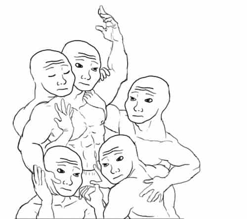

André is a young European who left his decaying country in 2012 for greener pastures. He enjoys exploring subterranean places, reading about a host of interconnected topics, and yearns for Tradition.


We are all too familiar with the SJWs’ “muh feelings” pose. We are also familiar with the Leftists’ manipulative stance, be it through their sanctimonious bullying, guilt-tripping, appeals to a pseudo-consensus, veiled threats, or constant emotional blackmailing. The maelstrom of emotions the Left plays with makes tempting to withdraw emotionally. We might be led to think that the higher good lies in “cold, hard facts” alone. But if we do so, we easily forget that cold facts do not prompt for any action, and if we merely describe while trying to get emotionally disconnected, we cut ourselves off the game.
When the infamous Karl Marx wrote that modern capitalism “drowned the most heavenly ecstasies of religious fervour, of chivalrous enthusiasm, of philistine sentimentalism, in the icy water of egotistical calculation,” he had a point. The bourgeois world of classic modernity is emotionally lacking, and both the bohemian artistry and Communist radical politics stepped up to fulfill the void. This historical point is still relevant today. Conservatives fail to make stands because they are much more passionate about their personal interest than about defending anything they pretend to stand for. SJWs, on the other hand, went very far into shrieking and bullying because they are usually passionate for their points. Different motivations lead to different outcomes. And a strong motivation, not to say a deep or passionate commitment, greatly helps to build a strong character.
The far-left was able to pick up people’s passions because the bourgeois would not, and perhaps could not, do that. The bourgeois idea of progress was about people becoming farm animals, individuals reduced to the status of producers and consumers in a world where nothing really new or interesting could appear anymore. In such a world, there is no need for passions and no need for politics, isn’t it? Well, the individuals would not let themselves get boiled down to the status of mere economical agents, and many preferred embracing some ridiculous strand of new-age spirituality, worthless artistry or even becoming Communists than living through the bourgeois-conservative nothingness..
Rejecting the passions and emotions, or at the very least trying to put them aside as to ignore them, made men weak and unable to take a stance. It has also made women unhinged, shameless, and willing to do anything for short-term pleasure, as no men were able to give them a proper sense of boundaries. Plus, passions being powerful motivators, the far-left mastery when it comes to stirring some made it tremendously powerful as well.
We must face passions, not as an annoyance, but as a resource that has to be mastered. This is true for ourselves and others. First, when we are aware of our emotional states without being directly prompted (“triggered”) by them, we gain the ability to choose consciously what we do and want to do, and can follow our own intuitions instead of getting framed by an alien narrative. Second, when we are also aware of others’ emotional states, we can steer them in a specific direction.
The latter is especially true for women: today, they follow fashions and MSM approval, when not following their own sluttiness and attention-whoring… but if men were able to reward, shame, and inspire proper passions in them, they would follow us instead. If we want this to happen, we have to take over the empire of passions and stir up some emotions in the public’s hearts, be it through discourse, artwork, or daily conversations. Here are three emotions I think we should be keen to stir.

According to Dr. Neel Burton,
Empathy can be defined as a person’s ability to recognize and share the emotions of another person, fictional character, or sentient being. It involves, first, seeing someone else’s situation from his perspective, and, second, sharing his emotions, including, if any, his distress. (Burton, Heaven and Hell, chap.21, p.153)
As empathy fits well with maternal instinct and motivates nurturing tendencies, women are naturally prone to it. Up until a very recent time, they took care of babies and small children, participated to local charities, worked in shelters for the homeless or went through menial but important tasks as nurses. They did so because their natural empathy motivated them to act this way.
By contrast, a striking feature of feminism is that it destroys womanly empathy and nurturing tendencies. From a feminist point of view, men are enemies or at the very least potential oppressors and children are a burden. Feminism reverses the empathy, turns it into defiance or even hatred. Worse: after women have lost their ability to feel positively towards the men they should at least respect, cultural Marxism stirs their natural empathy towards “minority” identities. Thus we see grrls caring about thugs, invaders, or weirdos, who are all positively portrayed in the media, more than they care about what should be their community.
The lack of empathy is also a problem among white men. Though black men often exert violence against each other, the majority of them always bonds when it comes to attacking the depleted white majority. The same goes for any community out there: they empathize with each other more than they would ever empathize with us. We, white men, are the only ones who do the exact opposite by being hypercritical against each other when we should actually be supportive and look at the positive rather than the negative.
There should be a lot more empathy towards us than there currently is. Others should be more sensitive to our plight, suffer when we suffer, or at least feel compelled to suffer when we do. We are the proximate [prochain?], not the Big Other. We, too, should have more empathy among ourselves: nice guys, for example, should not be considered as “jerks” or “bastards,” as say some red-pilled guys who seem to have internalized a negative framing, but as misled victims who proved some nobility by trying to conciliate “respect” for women with the healthy desire to get a deeper relationship. Along the same lines, the working- or middle-class average Joe who got disenfranchised should be painted on a positive and humane light so that wealthy liberals cannot ignore or merely sneer at him.
Here is an emotion the Left has really abused from. Remember 2007-8, when the first “black” president was supposed to end the racial tensions in the US as well as the neocon foreign wars? Democrat activists at that time wrote without batting an eyelid about their hope for a world without losers, for an outcome where everyone would win. Then, the racial tensions have never been so high, the white majority is more dispossessed than ever, and the same liberals who were trumpeting about a world without losers have no shame calling us losers—from their choices and politics. Hope has been abused from, and we have to take it back. In fact, we have already started to.
Hope can be defined as the desire for something to happen combined with an anticipation of it happening. It is the anticipation of something desired… To hope for something is to desire that thing, and to believe, rightly or wrongly, that the probability of it happening, though less than 1, is greater than 0. (Neel Burton, Heaven and Hell, chap.14, p.103)
Trump is a wild card who comes with no guarantee, for sure. He still gives us something no Obama could ever give us—hope. The Alt-Right, manosphere, and the whole flourishing of high-quality dissenting intellectual efforts give us hope as well. Someone wrote that “the Alt-Right represents the first new philosophical competitor to liberalism, broadly defined, since the fall of Communism.” Someone else, here on ROK, noticed that more and more women were fed up with misandric grievance-mongering and longed to become mothers. These trends are more than interesting: they seem to point towards a better future that we still have to conquer.
On the other side, the liberal status quo and Hillary in particular mean pure hopelessness. If Hillary gets elected, we will have even less jobs, anti-white and anti-male organized groups will attack even more, the wealthy globalists will get fatter at our expense, and so on. Interestingly, liberals today use arguments of a conservative kind: when they shriek something as “the 5 last US presidents tell you not to vote for Trump” or “the Alt-Right and deplorables are un-American,” they look more like McCarthyists than hippies. They are the establishment clinging to the status quo and worsening. We are the embodiment of hope for a positive change.
While hope should be spread among any decent people and is pretty straightforward once we agree on the intrinsic value of its object, love appears a bit trickier. In a relationship, whoever loves the other most is dominated whereas who loves less has more room to take action. If a man falls in love, he falls in the sense that he gets dumbed down, pedestalizes the girl, who in turn will get bored and look for a more challenging partner. Thus, seduction must be used to stir love in women: they must love us as well as their children. Both as a mistress and a mother, both as sexual and nurturing, a woman exerts love.
In men, love must be exerted in a more distilled and thoughtful form: when we protect our dear ones, toil for them, care about their interests, these efforts are an expression of love as well—although this form of love must be more distant as to allow ampler room for action. In any case, the feminine element must love the most and more directly.
It should be added that masculine and feminine can be conceived, not only as absolute, but also as relative terms. Esotericists consider that we are all “feminine” when considered under a higher point of view: the most fierce, courageous and risk-taking warrior remains “feminine” relatively to a genuine spiritual authority, and any human is “feminine” relatively to God as the ultimate Father. The Bible compares the good ones to a bride that shall get married to God (Revelation, 19). Hinduism recommends bhakti or devotion, i.e. religious love, to those belonging to the warrior caste, whereas the spiritual authority is more “masculine” as it enjoys a higher and more direct knowledge of God. These considerations might seem a bit far-fetched, but they were already highly relevant before the tiniest stint of modern degeneracy was born. Just remember that being in love is acceptable for a man as long as it never equates to pedestalizing a woman.
Passions and emotions matter. If we set them aside as irrelevant, someone else will push our emotional buttons—and the girls’—and spin us in no time. The philosopher René Descartes wrote that “all the good and the bad in this life depend from the passions” and that we had better be able to use them wisely. Ironically, the word “Cartesian” now denotes a logical, rationalistic, supernatural-denying mindset. This is accurate for the young Descartes, who was among the top scientists of his time, but tosses aside an important twist: the philosopher eventually lost his only daughter, Francine, and the sadness he felt while mourning her made him aware of the power of emotions. Yet, instead of being dominated by said emotions, Descartes strove to gain cogency about them, and he wrote a very interesting little treatise to expand a whole theory of the “passions of the soul.”
Our case is the same. Most if not all of us have been blue-pilled since infancy. Cultural Marxism was shoveled down our throat by school teachers, media figures, movies, social pressure. At each step of this process, our emotions were stirred and directed by spinsters so that, for example, we would feel a high empathy for so-called minorities while ignoring the homeless “white males” dying of cold at winter.
Ride the tiger of your own emotions and of (some) others’ as well if you don’t want sinister globalists to.
Read Next: How To Control Your Emotional State